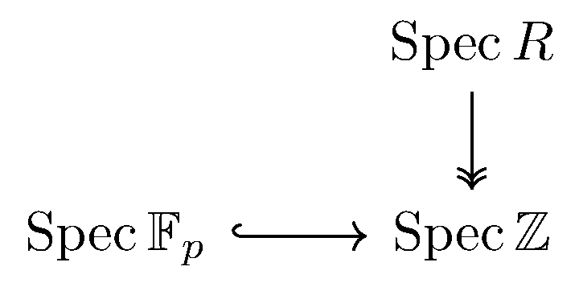
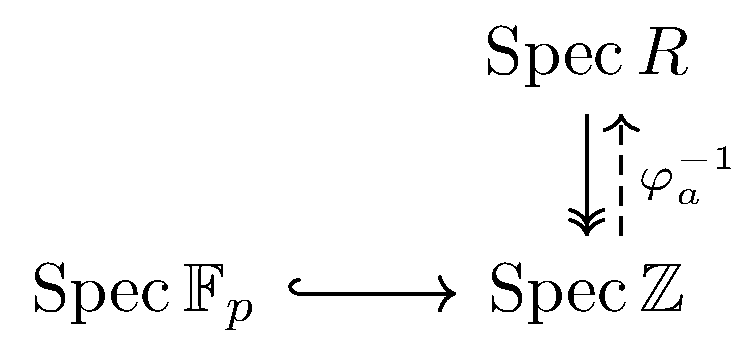
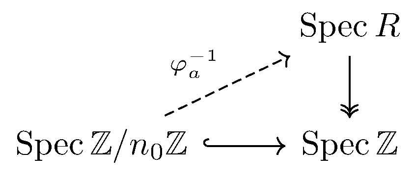
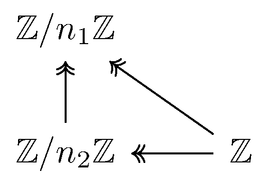
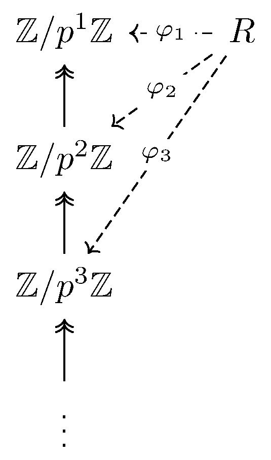
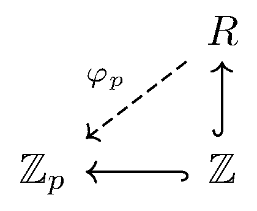
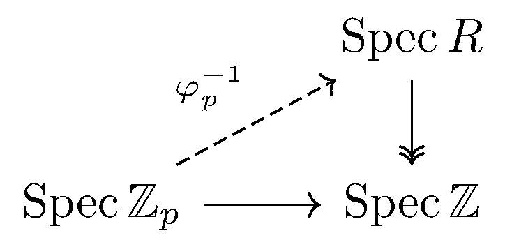

June 28th
Today I learned a toy model for schemes, as more or less the opposite category of commutative algebras. The idea is that for a ring map $R\to S,$ we induce a map of $\op{Spec}S\to\op{Spec}R$ by pre-imaging. Explicitly, we have the following.
Proposition. Fix rings $R$ and $S$ with a ring homomoprhism $\varphi:R\to S.$ This induces a canonical map $\varphi^{-1}:\op{Spec}S\to\op{Spec}R.$ In fact, this is functorial: if $\varphi:R\to S$ and $\psi:S\to T,$ then the induced $(\psi\circ\varphi)^{-1}$ is equal to $\varphi^{-1}\circ\psi^{-1}.$
The map is by pre-image. Take any prime $\mf q\in\op{Spec}S,$ and we show that $\varphi^{-1}(\mf q)\in\op{Spec}(R).$ Indeed, if $r_1r_2\in\varphi^{-1}(\mf q),$ then\[\varphi(r_1)\varphi(r_2)=\varphi(r_1r_2)\in\mf q\]because $\varphi$ is a ring homomorphism. The primality of $\mf q$ implies $\varphi(r_1)\in\mf q$ or $\varphi(r_2)\in\mf q,$ so $r_1\in\varphi^{-1}(\mf q)$ or $r_2\in\varphi^{-1}(\mf q).$ So indeed, $\varphi^{-1}(\mf q)$ is a prime, so $\varphi^{-1}:\op{Spec}S\to\op{Spec}R$ is well-defined.
To show that this functorial is the same thing as showing that taking pre-images is functorial. Namely, given $\mf p\in\op{Spec}T,$ we see that\[(\psi\circ\varphi)^{-1}(\mf p)=\{r\in R:\psi(\varphi(r))\in\mf p\}\]while\[\varphi^{-1}\left(\psi^{-1}(\mf p)\right)=\{r\in R:\varphi(r)\in\psi^{-1}(\mf p)\},\]and these are indeed equal. $\blacksquare$
We can think of $\op{Spec}R$ as a topological space, but I don't really care yet, so we'll think of it like as a set for now. Anyways, today the goal is to provide a different language to solving Diophantine equations, so we go after that now. Fix\[f\in\ZZ[t_1,\ldots,t_n]\]some irreducible polynomial. We are interested in the solutions of $f$ over $\ZZ,$ but it will be interesting to look at solutions to $f$ over various commutative $\ZZ$-algebras, so we define\[V_{(f)}(A):=\left\{a\in A^n:f(a)=0\right\},\]where $A$ is a commutative $\ZZ$-algebra. The way we talk about solutions, or elements of $V_{(f)}(A)$ more generally, is through the following.
Lemma. Given a commutative $\ZZ$-algebra $A,$ solutions in $V_{(f)}(A)$ are in natural bijection to maps \[\op{Hom}_{\op{CAlg}_\ZZ}\left(\frac{\ZZ[t_1,\ldots,t_n]}{(f)},A\right).\]
We work backwards a bit. We notice that maps\[\varphi:\frac{\ZZ[t_1,\ldots,t_n]}{(f)}\to A\]are in natural bijection with maps\[\ZZ[t_1,\ldots,t_n]\to A\]with kernel $(f).$ However, maps $\varphi:\ZZ[t_1,\ldots,t_n]\to A$ are in natural bijection with $n$-tuples $(a_1,\ldots,a_n)\in A^n$ which dictate $\varphi(t_1),\ldots,\varphi(t_n).$
Thus, we claim that maps $\varphi:\ZZ[t_1,\ldots,t_n]\to A$ with kernel $(f)$ are in natural bijection with solutions in $V_{(f)}(A)$ under the bijection mentioned above. Indeed, if the kernel is $f,$ then\[\varphi(f(t))=f\big(\varphi(t_1),\ldots,\varphi(t_2)\big)\]because $\varphi$ is a homomorphism of commutative $\ZZ$-algebras. So the tuple provided by the map $\varphi$ does indeed live in $V_{(f)}(A).$ Conversely, any solution $a=(a_k)_{k=1}^n\in V_{(f)}(A)$ bijects to $\varphi$ with $\varphi(t_\bullet)=a_\bullet$ which satisfies\[\varphi(f(t))=f\big(\varphi(t_1),\ldots,\varphi(t_2)\big)=f(a_1,\ldots,a_n)=0.\]Thus, the produced $\varphi$ does indeed have $f$ and therefore $(f)$ in its kernel. This completes the proof. $\blacksquare$
In light of the above, we write $R:=\ZZ[t_1,\ldots,t_n]/(f)$ to be the quotient space associated to $f.$ Note that $R$ a commutative $\ZZ$-algebra itself and in fact a ring, so the point is that any solution $V_S(A)$ for a commutative $\ZZ$-algebra $A$ naturally induces $X\to A,$ which naturally induces\[\op{Spec}A\to\op{Spec}R.\]This means that we can think about solutions to $(f)$ as maps into $\op{Spec}R,$ which has the advantage of not having to touch elements anywhere. This is our geometric way to view solving Diophantine equations, and it is essentially the slogan for today.
Idea. Fix $A$ a commutative $\ZZ$-algebra. A solution $a\in V_{(f)}(A)$ naturally induces a map $\op{Spec}A\to\op{Spec}R.$
We remark that the converse is not exactly true in full generality because a mapping on spectrums does not induce a map on the rings.
Let's get some practice with this idea. I think the following is true in the case of affine things, though I do not know its proof.
Lemma. Fix a ring homomorphism $\varphi:R\to S$ of affine varieties with induced $\varphi^{-1}:\op{Spec}S\to\op{Spec}R.$ If $\varphi$ is monic, then $\varphi^{-1}$ is epic; if $\varphi$ is epic, then $\varphi^{-1}$ is monic.
I do not know the proof of this. $\blacksquare$
We are going to use the above to begin to build some geometric intuition, so aside from the notation on our arrows, we will actually prove our claims without the above. For example, we have the canonical surjection $\ZZ\twoheadrightarrow\FF_p$ for $p$ prime, so we have induced an embedding\[\op{Spec}\FF_p\hookrightarrow\op{Spec}\ZZ.\]In fact, $\FF_p$ has only one prime, namely $(0),$ and if we track everything back through, its inverse image is $(p)\in\op{Spec}\ZZ.$ So we are really taking $(0)\mapsto(p)$ here: we have $\op{Spec}\FF_p$ embedding as a point in $\ZZ.$
Similarly, we have an embedding $\ZZ\hookrightarrow R$ because $R$ is a commutative $\ZZ$-algebra. This means that we induce a surjection/covering\[\op{Spec}R\twoheadrightarrow\op{Spec}\ZZ.\]This is a bit more annoying to describe explicitly, so we won't. The point is that we have the following diagram, virtually for free.

Geometrically, $\op{Spec}R$ covers $\op{Spec}\ZZ,$ and $\op{Spec}\ZZ$ has a point $\op{Spec}\FF_p.$
Now, a solution in $a\in V_{(f)}(\ZZ)$ induce a map $\varphi_a:R\to\ZZ,$ and because this is a map of $\ZZ$-algebras, the composite $\ZZ\hookrightarrow R\to\ZZ$ should be the identity. Explicitly, the map $\ZZ\hookrightarrow R$ cares nothing for the polynomial structure of $R,$ but $R\to\ZZ$ holds the embedded $\ZZ$ in place and only uses that polynomial structure.
The point of saying this is that the induced map $\varphi_a:R\to\ZZ$ from a solution $a\in V_{(f)}(\ZZ)$ is making a section of $\ZZ\hookrightarrow R.$ Thus, when we look to the spectrum, functoriality says\[\op{Spec}\ZZ\twoheadleftarrow\op{Spec}R\stackrel{\varphi_a^{-1}}\leftarrow\op{Spec}\ZZ\]should also be the identity. That is, $\varphi_a^{-1}$ will be a section of the covering $\op{Spec}R\twoheadrightarrow\op{Spec}\ZZ.$ Adding to the diagram, we see the following.

So, at a high level, we are searching for sections of $\op{Spec}R\to\op{Spec}\ZZ.$
Geometrically, one barrier to constructing a full upwards map $\op{Spec}\ZZ\to\op{Spec}R$ is that we need to know where we can send the point $\op{Spec}\FF_p$ in a reasonable way. In other words, we need a map $\op{Spec}\FF_p\to\op{Spec}R.$ The way we know how to do this is by looking for maps $R\to\FF_p,$ which means we need a solution in $V_{(f)}(\FF_p).$
So at a high level, we have geometrically discovered that a "local'' barrier to the Diophantine equation $f=0$ over $\ZZ$ is solving the Diophantine equation $\FF_p.$ In other words, we need to be able to solve $f\pmod p$ before we can solve over $\ZZ.$ We have more or less recovered the global-to-local principle.
We take a second to be as explicit as we can with out current technology. We work in a little more generality than $\FF_p.$
Lemma. Let $n_0$ be a positive integer, and fix $a\in V_{(f)}(\ZZ/n_0\ZZ)$ a solution inducing $\varphi_a:R\to\ZZ/n_0\ZZ.$ We claim that the following diagram commutes. �img3.png
This is just a matter of unravelling all of our maps. Fixing $a=(a_k)_{k=1}^n,$ we have that $\varphi_a:R\to\ZZ/n_0\ZZ$ is the canonical map $\ZZ\to\ZZ/n_0\ZZ$ with $t_\bullet\mapsto a_\bullet.$ However, when $\ZZ\hookrightarrow R,$ then $\varphi_a$ will only act like $\ZZ\to\ZZ/n_0\ZZ$ on these inputs. So indeed, the diagram commutes by restriction. $\blacksquare$
Moving back to the spectrum world, we get that the following diagram also commutes by functoriality.

We quickly note that even though $\op{Spec}\ZZ/n_0\ZZ$ is embedding into $\op{Spec}\ZZ,$ it is no longer embedding as a single point because $\op{Spec}\ZZ/n_0\ZZ$ is allowed to have more than one prime ideal (and does when $n_0$ is not prime).
It is currently unclear what we gained from moving from $\FF_p$ to $\ZZ/n_0\ZZ,$ but we note that the real global-to-local principle is about trying to lift solutions from $\ZZ_p$ over all $p$ to $\ZZ.$ Thus, we want to expand our view from the point $\op{Spec}\FF_p$ to $\op{Spec}\ZZ/p^\bullet\ZZ.$
In particular, we have that finding a solution modulo $p$ corresponds in some weak way with finding a map $\op{Spec}\ZZ/p\ZZ\to\op{Spec}R.$ Because finding solutions in $\ZZ_p$ corresponds with finding a whole bunch of compatible solutions in $\ZZ/p^\bullet\ZZ,$ we would like to know that the induced $\varphi_a$ maps commute when the solutions do. Indeed, they do.
Lemma. Suppose $n_1$ and $n_2$ are positive integers with $n_1\mid n_2.$ Additionally, suppose we are given solutions $a_1\in V_{(f)}(\ZZ/n_1\ZZ)$ and $a_2\in V_{(f)}(\ZZ/n_2\ZZ)$ such that $a_2\equiv a_1\pmod{n_1}.$ Then the induced maps $\varphi_1:R\to\ZZ/n_1\ZZ$ and $\varphi_2:R\to\ZZ/n_2\ZZ$ cause the following diagram to commute. �img5.png
This is again a matter of unravelling our maps. The main point is that the following diagram commutes because $n_1\mid n_2.$

Setting $a=(\alpha_k)_{k=1}^n,$ the map $R\to\ZZ/n\ZZ$ is the map which does $\ZZ\to\ZZ/n\ZZ$ and sends $t_\bullet\mapsto\alpha_\bullet.$ In particular, we set $a_1=(a_{1,k})_{k=1}^n$ and $a_2=(a_{2,k})_{k=1}^n$ so that\[a_{1,\bullet}\equiv a_{2,\bullet}\pmod{n_1}.\]In particular, when we send $R\to\ZZ/n_2\ZZ$ and then to $\ZZ/n_1\ZZ,$ a $t_\bullet$ gets sent to $a_{2,\bullet}\equiv a_{1,\bullet}$ in $\ZZ/n_1\ZZ.$ So the $t_\bullet$ are all being sent to the same place as by $R\to\ZZ/n_1\ZZ.$ As for our coefficients in $\ZZ,$ we are safe because the diagram at the beginning commutes. $\blacksquare$
The punchline is that we can use the above lemma to say that a compatible sequence of solutions $a_\bullet\in V_{(f)}(\ZZ/p^\bullet\ZZ)$ (i.e., with $a_k\equiv a_\ell\pmod{p^{\min\{k,\ell\}}}$) induces maps $\varphi_\bullet:R\to\ZZ/p^\bullet\ZZ$ which make the following diagram commute.

In fact, we can add in $\ZZ$ and all of its maps $\ZZ\twoheadrightarrow\ZZ/p^\bullet\ZZ,$ and the diagram still commutes by a prior lemma. We won't do this because it gets messy, but the point is that we get a unique map $\varphi_p:R\to\ZZ_p$ by universal property which commutes with all of the $\varphi_\bullet.$
We say now that we would like to make the following diagram commute.

Well, the map $\ZZ\hookrightarrow\ZZ_p$ is uniquely defined to commute with the projections $\ZZ\twoheadrightarrow\ZZ/p^\bullet\ZZ,$ so it suffices to show that the composite $\ZZ\hookrightarrow R\to\ZZ_p$ also commutes with these projections. For this, $R\to\ZZ_p$ is uniquely defined to commute with the $\varphi_\bullet:R\to\ZZ/p^\bullet\ZZ,$ so\[\ZZ\hookrightarrow R\to\ZZ_p\to\ZZ/p^\bullet\ZZ=\ZZ\hookrightarrow R\to\ZZ/p^\bullet\ZZ.\]However, the composite on the right-hand side is simply the projection $\ZZ\to\ZZ/p^\bullet\ZZ$ by a previous lemma. So indeed, $\ZZ\hookrightarrow R\to\ZZ_p$ commutes with the projections $\ZZ\to\ZZ/p^\bullet\ZZ,$ making the diagram commute.
After all of that, we have the following.
Lemma. A compatible sequence of solutions $a_\bullet\in V_{(f)}(\ZZ/p^\bullet\ZZ)$ yields a canonical map $R\to\ZZ_p$ making the following diagram commute. �img9.png
This follows from the above discussion. $\blacksquare$
Now, moving into spectrum land, we see that a compatible sequence of solutions really induces the following commutative diagram.

Observe here that $\op{Spec}\ZZ_p$ does not surject onto $\op{Spec}\ZZ$ even though $\ZZ$ embeds into $\ZZ_p.$ So our intuition lemma does not work in full generality.
The geometric way to view $\op{Spec}\ZZ_p$ is as a small disk/neighborhood around the point $(p)\in\op{Spec}\ZZ.$ It still holds that $\ZZ_p$ is a local obstruction to creating the desired solution $\op{Spec}\ZZ\to\op{Spec}R,$ and in fact $\ZZ_p$ is essentially the local obstruction at $(p).$ Anyways, the point is that we managed to recover the idea "to solve in $\ZZ,$ solve in $\ZZ_p$ first'' somewhat geometrically.